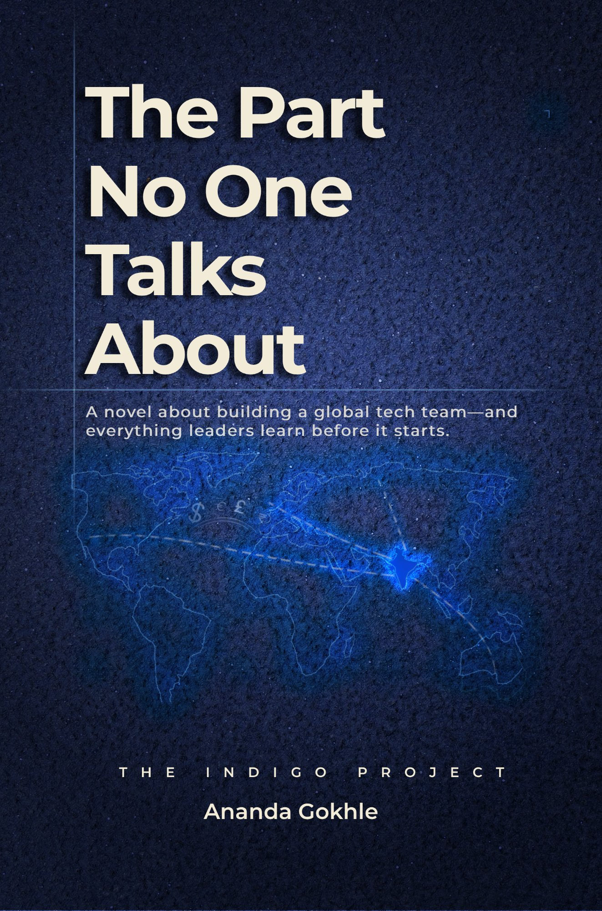

When Anna Bright steps into leadership at her family's lighting company, growth stops being optional. The business is stable, respected, and executing well—but expansion forces questions no one has had to answer before: who owns decisions, how accountability moves, and what leadership must become as complexity increases.
As Anna navigates scale, global teams, and inherited structures, she discovers that the hardest part of building a company isn't execution—it's designing the conditions that make execution possible.
The Part No One Talks About is a business parable about leadership, growth, and the quiet decisions that shape what organisations become.
The Series
Anna Bright was observant. She always noticed the moments beneath the surface just before a move was made: the pause between locking the front door and turning around to leave for a long trip, the brief stillness before an aircraft pushed back from the gate. These were moments when memory surfaced without a prompt.
The airport road stretched out beside her, all overpasses and exits she was familiar with. By this point, she had driven through it countless times for routine trips, conferences, board meetings. But somehow, this journey felt different. This one didn't let her drift into a power nap like it usually did on her way to the airport. By the time the sun rose again, she would be crossing continents to establish Brightworks' Global Tech Center in India. A sentence she had rehearsed in countless meetings now felt oddly personal to her.
She thought about how improbable this moment once seemed, not that long ago. Barely two years ago, she had returned to Portland with hesitation, carrying a fear of disappointing her father. Brightworks had not started as a tech-enabled company. It had been vastly a brick-and-mortar, albeit large, light store — solid, dependable, physical; warehouses, inventory, long-established processes built for predictability and stability. When her father first spoke about software as a core capability, rather than just a support function, she had gone into a moment of thoughtful quiet.
Transformations, to her, always sound elegant in retrospect. Living through one, and seeing it through, was messier. She had often pushed for systems before people were ready, for change before comfort loosened its grip. She had learned to sit with resistance without mistaking it for rejection.
Hesitation had been her constant companion in those early few months; doubt intermingled with something subtler. The awareness that if she was wrong, the consequences would be unavoidable, measurable, and personal. She had learned to move forward anyway.
A couple of hours later, the plane leveled off, the cabin lights dimmed, and India drew closer in her mind, as well as in distance. A new office. A new set of expectations layered atop existing ones. The same team, but an additional entity that was now her responsibility. The challenges ahead were already lining up: culture, distance, trust, time zones, decisions made without hallway conversations. She knew that no slide deck ever captured the human cost of building something from scratch.
Her thoughts returned, as they often did whenever she was pondering the company and the scaling, to Pundit. He was a man who didn't announce influence; he applied it. In moments when she felt the pressure to justify every instinct, he had asked simpler questions, stripping the doubts away. What problem were they really solving? Who needed to trust whom? What could wait, and what could not?
He had a way of making complexity feel navigable without diminishing it. There had been conversations they had that changed the direction of entire initiatives: a pause before a decision, a reminder to listen longer, a sense of confidence that steadied her when her momentum felt fragile. He didn't claim credit, and perhaps because of that, his presence was firmer than most people's.
As the plane crossed into higher skies, Anna realized that this journey had not been just about opening an office. It was about carrying forward everything she had learned the hard way: that transformation is less about technology than conviction, less about structure than trust. That leadership is often exercised in the background, and progress does not announce itself in the most obvious ways when it finally arrives.
India was not a destination on a map anymore. It was the next chapter. She closed her eyes, not just to rest, but to hold this moment in her mind.
Ravi was getting ready for the BrightWorks office opening party. It was a short drive from home, factoring the traffic. He got into the car, the old Hindi film songs playing, but his mind went back to an early conversation with Pundit in his office.
“Being a site lead is not easy, Ravi,” Pundit said, crossing his legs. “There is surely glamour attached to it — you will be at NASSCOM and other events, and the visibility will be great.”
Ravi adjusted his posture, intent on listening.
Pundit continued, “If you look closely, the ecosystem does not allow new people to come on board and be successful.”
Ravi nodded. He had seen a few of his peers move around the block, performing the same job duties in almost all the same companies. “Why do you think that happens?” he asked. “Is it intentional?”
Pundit paused briefly. “There are quite a few reasons in my opinion — job insecurity, not many players who have helped set up the centre, and no structured capability building.”
“This role is evolving,” Pundit said. “Organisations started looking east to control cost and to some extent the team dynamics. That was a few decades back — like when I started working for the hedge fund, there was absolute control on all of us.”
His eyes closed, as if imagining those days, and he drifted into memory lane. Ravi waited patiently. He knew Pundit to be a person of immense leadership experience who had suffered for his ahead-of-the-market thinking. When almost a minute had passed, Ravi smiled and said, “You still awake, or should I get a pillow?”
Pundit smiled, removed his glasses and rubbed his eyes. “More organisations moved in,” he continued. “The leaders grew in number, restless for meaningful work. But the voices were more noise than movement, and in pockets.”
“That added more demand organically, but the supply of leaders was less?” Ravi said.
“Exactly. And qualified leaders, or the ecosystem to qualify them — did not exist. It still does not exist, in my opinion.”
Pundit continued, “Then the world got hit with the pandemic. However difficult it was, we humans, and most importantly the engineers, endured and evolved. We were able to deliver super quality work from home, among constraints we were never exposed to.”
“Yes,” Ravi said. “The distance, timezones, and any other perceived or otherwise existing barriers were just gone. Poof — like flour getting dusted off.”
“Correct,” Pundit said. “Monotonous work triggered the hunger for more ownership. Leaders like yourself were younger, and there was a generational shift in the ways of working.”
Pundit looked sharply at Ravi. “This generation, your generation of leaders, wants ownership. They want to feel happy with the work they are doing. Not just survive at work.”
“This leader — you, Ravi — needs to work across cultures, continents, timezones. Think global, act local, the most abused term in our industry. How much pressure can one person absorb? Add to that a lesser budget than a VP in his own organisation, a functional report to someone in the US or UK, parallel structures, and people in the home country worried about job security, subconsciously holding back information.”
“Where does this site lead go for cover?” Pundit said. “This person always feels vulnerable. And then add the VP in his own geography constantly wanting the site lead role — until he gets there and realises he is not ready for it.”
Ravi asked thoughtfully, “It almost feels like you are discounting the numerous leaders India has produced.”
Pundit paused, choosing his words carefully. “We are blessed to have great leaders and managers. However, for this new industry and this job role, we need much more.”
Ravi stared right back at Pundit. “So you are saying this job has no manual.”
This book will be about how teams can be successful using the INDIGO framework.
Leadership framework for growing and scaling technology teams
A structured way to think about expansion as size, scope, complexity, and geographical distance increase. As technology teams grow, outcomes are shaped less by proximity and direct oversight, and more by structure, leadership behaviour, and how work moves across boundaries.
INDIGO is not a sequence or checklist. Leaders often encounter these dimensions simultaneously and revisit them as teams evolve. INDIGO provides language and structure to engage growth with clarity rather than reaction.